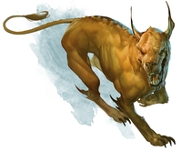

If this comes off as loud, I apologize. I could not a find a way to lower the volume. Hope you still find the music pleasing as
you look through the creatures.
Monster Depiction

Bandit
Medium humanoid (any race), any non-lawful alignment
Armor Class 12 (Leather Armor)
Hit Points 11 (2d8+2)
Speed 30 ft.
11 (+0) STR
12 (+1) DEX
12 (+1) CON
10 (+0) INT
10 (+0) WIS
10 (+0) CHA
Senses: passive Perception 10
Languages: Any One Language (Usually Common)
Challenge: 1/8 (25 XP)
Actions
Scimitar. Melee Weapon Attack: +3 to hit, reach 5 ft., one target. Hit: (1d6 + 1) slashing damage.
Light Crossbow. Ranged Weapon Attack: +3 to hit, reach 80/320 ft., one target. Hit: (1d8 + 1) piercing damage.
Blink Dog
Medium fey, lawful good
Armor Class 13
Hit Points 22 (4d8+4)
Speed 40 ft.
12 (+1) STR
17 (+3) DEX
12 (+1) CON
10 (+0) INT
13 (+1) WIS
11 (+0) CHA
Skills: Perception +3, Stealth +5
Senses: passive Perception 10
Languages: Blink Dog, Understands Sylvan But Can't Speak It
Challenge: 1/4 (50 XP)
Perk
Keen Hearing and Smell. The dog has advantage on Wisdom (Perception) checks that rely on hearing or smell.
Actions
Bite. Melee Weapon Attack: +3 to hit, reach 5 ft., one target. Hit: (1d6 + 1) piercing damage.
Teleport (Recharge 4-6). The dog magically teleports, along with any equipment it is
wearing or carrying, up to 40 ft. to an unoccupied space it can see. Before or after teleporting, the dog can make one bite attack.
Cultist
Medium humanoid (any race), any non-good alignment
Armor Class 12 (Leather Armor)
Hit Points 9 (2d8)
Speed 30 ft.
11 (+0) STR
12 (+1) DEX
10 (+0) CON
10 (+0) INT
11 (+0) WIS
10 (+0) CHA
Skills: Deception +2, Religion +2
Senses: passive Perception 10
Languages: Any One Language (Usually Common)
Challenge: 1/8 (25 XP)
Perk
Dark Devotion. The cultist has advantage on saving throws against being charmed or frightened.
Actions
Scimitar. Melee Weapon Attack: +3 to hit, reach 5 ft., one creature. Hit: (1d6 + 1) slashing damage.
Kobold
Small humanoid (kobold), lawful evil
Armor Class 12
Hit Points 5 (2d6-2)
Speed 30 ft.
7 (-2) STR
15 (+2) DEX
9 (-1) CON
8 (-1) INT
7 (-2) WIS
8 (-1) CHA
Senses: Darkvision 60 Ft., passive Perception 8
Languages: Common, Draconic
Challenge: 1/8 (25 XP)
Perks
Sunlight Sensitivity. While in sunlight, the kobold has disadvantage on attack rolls, as well as on Wisdom (Perception) checks that rely on sight.
Pack Tactics. The kobold has advantage on an attack roll against a creature if at least one of the kobold's allies is within 5 ft. of the creature and the ally isn't incapacitated.
Actions
Dagger. Melee Weapon Attack: +4 to hit, reach 5 ft., one target. Hit: (1d4 + 2) piercing damage.
Sling. Ranged Weapon Attack: +4 to hit, reach 30/120 ft., one target. Hit: (1d4 + 2) bludgeoning damage.
Stirge
Tiny beast, unaligned
Armor Class 14 (Natural Armor)
Hit Points 2 (1d4)
Speed 10 ft., fly 40 ft.
4 (-3) STR
16 (+3) DEX
11 (+0) CON
2 (-4) INT
8 (-1) WIS
6 (-2) CHA
Senses: Darkvision 60 Ft., passive Perception 9
Challenge: 1/8 (25 XP)
Actions
Blood Drain. Melee Weapon Attack: +5 to hit, reach 5 ft., one creature. Hit: (1d4 + 3) piercing damage. The stirge attaches to the target While attached, the stirge doesn't attack. Instead, at the start of each of the stirge's turns, the target loses 5 (1d4 + 3) hit points due to blood loss.
The stirge can detach itself by spending 5 feet of its movement.
It does so after it drains 10 hit points of blood from the target or the target dies.
A creature, including the target, can use its action to detach the stirge
Giant Hyena
Large beast, unaligned
Armor Class 12
Hit Points 45 (6d10+12)
Speed 50 ft.
16 (+3) STR
14 (+2) DEX
14 (+2) CON
2 (-4) INT
12 (+1) WIS
7 (-2) CHA
Skills Perception +3
Senses passive Perception 13
Challenge 1 (200 XP)
Perk
Rampage. When the hyena reduces a creature to 0 hit points with a melee attack on its turn, the hyena can take a bonus action to move up to half its speed and make a bite attack.
Actions
Bite. Melee Weapon Attack: +5 to hit, reach 5 ft., one target. Hit: (2d6 + 3) piercing damage.
Lich
Medium undead, any evil alignment
Armor Class 17 (Natural Armor)
Hit Points 135 (18d8+54)
Speed 30 ft.
11 (+0) STR
16 (+3) DEX
16 (+3) CON
20 (+5) INT
14 (+2) WIS
16 (+3) CHA
Saving Throws: Con +10, Int +12, Wis +9 (These are modifiers added to pure stat rolls)
Skills: Arcana +18, History +12, Insight +9, Perception +9
Damage Resistance: Cold, Lightning, Necrotic
Damage Immunities: Poison, Bludgeoning, Piercing, And Slashing From Nonmagical Weapons
Condition Immunities: Charmed, Exhaustion, Frightened, Paralyzed, Poisoned
Senses: Truesight 120 Ft., passive Perception 19
Languages: Common Plus Up To Five Other Languages
Challenge: 21 (33,000 XP)
Perks
Legendary Resistance (3/Day). If the lich fails a saving throw, it can choose to succeed instead.
Rejuvenation. If it has a phylactery, a destroyed lich gains a new body in 1d10 days, regaining all its hit points and becoming active again. The new body appears within 5 feet of the phylactery.
Spellcasting. The lich is an 18th-level spellcaster. Its spellcasting ability is Intelligence (spell save DC 20, +12 to hit with spell attacks). The lich has the following wizard spells prepared:
Cantrips (at will): mage hand, prestidigitation, ray of frost
1st level (4 slots): detect magic, magic missile, shield, thunderwave
2nd level (3 slots): detect thoughts, invisibility, acid arrow, mirror image
3rd level (3 slots): animate dead, counterspell, dispel magic, fireball
4th level (3 slots): blight, dimension door
5th level (3 slots): cloudkill, scrying
6th level (1 slot): disintegrate, globe of invulnerability
7th level (1 slot): finger of death, plane shift
8th level (1 slot): dominate monster, power word stun
9th level (1 slot): power word kill
Turn Resistance. The lich has advantage on saving throws against any effect that turns undead.
Actions
Paralyzing Touch. Melee Spell Attack: +12 to hit, reach 5 ft., one creature. Hit: (3d6) cold damage.
The target must succeed on a DC 18 Constitution saving throw or be paralyzed for 1 minute.
The target can repeat the saving throw at the end of each of its turns, ending the effect on itself on a success.
Legendary Actions
Lich can take 3 legendary actions, choosing from the options below. Only one legendary action option can be used at a time and only at the end of another creature’s turn. Lich regains spent legendary actions at the start of their turn.
Cantrip.The lich casts a cantrip.
Paralyzing Touch (Costs 2 Actions). The lich uses its Paralyzing Touch.
Frightening Gaze (Costs 2 Actions). The lich fixes its gaze on one creature it can see within 10
feet of it. The target must succeed on a DC 18 Wisdom saving throw against this magic or become frightened for 1 minute.
The frightened target can repeat the saving throw at the end of each of its turns, ending the effect on itself on a success.
If a target's saving throw is successful or the effect ends for it, the target is immune to the lich's gaze for the next 24 hours.
Disrupt Life (Costs 3 Actions). Each non-undead creature within 20 feet of the lich must make a DC 18 Constitution saving
throw against this magic, taking 21 (6d6) necrotic damage on a failed save, or half as much damage on a successful one.
Tarrasque
Gargantuan monstrosity (titan), unaligned
Armor Class 25 (Natural Armor)
Hit Points 676 (33d20+330)
Speed 40 ft.
30 (+10) STR
11 (+0) DEX
30 (+10) CON
3 (-4) INT
11 (+0) WIS
11 (+0) CHA
Saving Throws: Int +5, Wis +9, Cha +9
Damage Immunities: Fire, Poison; Bludgeoning, Piercing, And Slashing From Nonmagical Weapons
Condition Immunities: Charmed, Frightened, Paralyzed, Poisoned
Senses: Blindsight 120 Ft., passive Perception 10
Challenge: 30 (155,000 XP)
Perks
Legendary Resistance (3/Day). If the tarrasque fails a saving throw, it can choose to succeed instead.
Magic Resistance. The tarrasque has advantage on saving throws against spells and other magical effects.
Reflective Carapace. Any time the tarrasque is targeted by a magic missile spell, a line spell, or a spell that requires a
ranged attack roll, roll a d6. On a 1 to 5, the tarrasque is unaffected. On a 6, the tarrasque is unaffected, and the effect is reflected
back at the caster as though it originated from the tarrasque, turning the caster into the target.
Siege Monster. The tarrasque deals double damage to objects and structures.
Actions
Multiattack. The tarrasque can use its Frightful Presence. It then makes five attacks: one with its bite, two with its claws, one with its horns, and one with its tai l. It can use its Swallow instead of its bite.
Bite. Melee Weapon Attack: +19 to hit, reach 10 ft., one target. Hit: (4d12 + 10) piercing damage. If the target is a creature, it is grappled (escape DC 20). Until this grapple ends, the target is restrained, and the tarrasque can't bite another target
Claw. Melee Weapon Attack: +19 to hit, reach 15 ft., one target. Hit: (4d8 + 10) slashing damage.
Horns. Melee Weapon Attack: +19 to hit, reach 10 ft., one target. Hit: (4d10 + 10) piercing damage.
Tail. Melee Weapon Attack: +19 to hit, reach 20 ft., one target. Hit: (4d6 + 10) bludgeoning damage. If the target is a creature, it must succeed on a DC 20 Strength saving throw or be knocked prone
Frightful Presence. Each creature of the tarrasque's choice within 120 feet of it and aware of it must succeed on a DC 17 Wisdom saving throw or become frightened for 1 minute. A creature can repeat the saving throw at the end of each of its turns, with disadvantage if the tarrasque is within line of sight, ending the effect on itself on a success. If a creature's saving throw is successful or the effect ends for it, the creature is immune to the tarrasque's Frightful Presence for the next 24 hours.
Swallow. The tarrasque makes one bite attack against a Large or smaller creature it is grappling. If the attack hits, the target takes the bite's damage, the target is swallowed, and the grapple ends. While swallowed, the creature is blinded and restrained, it has total cover against attacks and other effects outside the tarrasque, and it takes 56 (16d6) acid damage at the start of each of the tarrasque's turns.
If the tarrasque takes 60 damage or more on a single turn from a creature inside it,
the tarrasque must succeed on a DC 20 Constitution saving throw at the end of that turn or
regurgitate all swallowed creatures, which fall prone in a space within 10 feet of the tarrasque.
If the tarrasque dies, a swallowed creature is no longer restrained by it and can escape from the corpse by using 30 feet of movement, exiting prone.
Legendary Actions
Tarrasque can take 3 legendary actions, choosing from the options below.
Only one legendary action option can be used at a time and only at the end of another creature’s turn.
Tarrasque regains spent legendary actions at the start of their turn.
Attack. The tarrasque makes one claw attack or tail attack.
Move. The tarrasque moves up to half its speed.
Chomp. (Costs 2 Actions).The tarrasque makes one bite attack or uses its Swallow.
The world of D&D has a vast collation of different monsters to battle or for the DM to use.
Much like the player character, monsters have their own unique stats, abilities, and actions to use.
Monster also often have an alignment of their own which often determines what the creature is like,
but ultimately that decision lies within the DM to decide. However, some monsters are unable to make moral choices and,
therefore, are incapable of having an alignment. This is usually reserved for wild, non-sentient animals.
Here I've gathered a number of different monsters that you may look over, all of which include the basic information mentioned above.
All monster have what is know as a Challenge Rating (or CR for short) which determines just how difficult a monster is with the
most dangerous monsters rocking a CR of 30 and the weakest/non-threatening having a CR of 0.
This helps with determining with either or not characters are suited for facing against such potential
threats depending on their level and the size of their party.
For example, it would take five level 1 player characters just to takedown 1
giant hyena without to much trouble. And that only has a challenge rating of 1!
Don't worry though there are much weaker monsters that can have a CR of 1/8, 1/4, or 1/2.
These level of monsters are more suited for a level 1 character. But, again, ultimately how troubling a monster is,
is left up to the DM to choose nor is a player restricted to using weak level 1 characters unless the DM says otherwise.
Standing out more from the crowd, are legendary monsters who have a special feature to them called Legendary Actions.
What this does is allow the monster to perform an action even if it's not its turn, which can take the form of an attack from itself,
its lair, or from the environment affected by it's very presense. This sort of action can only be executed once per other creatures turn,
making creatures with this ability quite challenging to handle. Although, there are some legendary actions that require 2 or more other creatures to
have taken their turn before another Legendary action can be performed.